import pandas as pd
import numpy as np
import matplotlib.pyplot as plt
import seaborn as sns
from matplotlib.pyplot import figure
%matplotlib inline
Import data and preprocess¶
data = pd.read_csv("NYCgov_Poverty_Measure_Data__2015_.csv")
# Adding column for age-group
bins= np.arange(0,110,10)
labels = ['(' + str(x)+'-'+str(x+10)+']' for x in bins[:-1]]
labels[-1] = labels[-1].replace("100]", "inf)")
data['AgeGroup'] = pd.cut(data['AGEP'], bins=bins, labels=labels, right=True)
# Create dataframe with only adults (finished school)
data_adult = data[data['AGEP'] > 24]
Mappings¶
EducAttain_map = {1:'less than High School',2:'High School Degree',3:'Some College',4:'Bachelors Degree or higher'}
SEX_map = {1: 'Male', 2:'Female'}
Boro_map = {1:'Bronx', 2:'Brooklyn',3:'Manhattan',4:'Queens',5:'Staten Island'}
Off_Pov_Stat_map = {1:'In Poverty',2:'Not in Poverty'}
Ethnicity_map = {1:'Non-Hispanic White',2:'Non-Hispanic Black',3:'Non-Hispanic Asian',
4:'Hispanic, Any Race',5:'Other Race/Ethnic Group'}
data.shape
(69103, 62)
data.info()
<class 'pandas.core.frame.DataFrame'>
RangeIndex: 69103 entries, 0 to 69102
Data columns (total 62 columns):
# Column Non-Null Count Dtype
--- ------ -------------- -----
0 SERIALNO 69103 non-null int64
1 SPORDER 69103 non-null int64
2 PWGTP 69103 non-null int64
3 WGTP 69103 non-null int64
4 AGEP 69103 non-null int64
5 CIT 69103 non-null int64
6 REL 69103 non-null int64
7 SCH 69103 non-null int64
8 SCHG 69103 non-null int64
9 SCHL 66916 non-null float64
10 SEX 69103 non-null int64
11 ESR 56682 non-null float64
12 LANX 65336 non-null float64
13 ENG 31066 non-null float64
14 MSP 57455 non-null float64
15 MAR 69103 non-null int64
16 WKW 36072 non-null float64
17 WKHP 69103 non-null int64
18 DIS 69103 non-null int64
19 JWTR 32483 non-null float64
20 NP 69103 non-null int64
21 TEN 69103 non-null int64
22 HHT 69103 non-null int64
23 AgeCateg 69103 non-null int64
24 Boro 69103 non-null int64
25 CitizenStatus 69103 non-null int64
26 EducAttain 66916 non-null float64
27 EST_Childcare 69103 non-null float64
28 EST_Commuting 69103 non-null float64
29 EST_EITC 69103 non-null float64
30 EST_FICAtax 69103 non-null float64
31 EST_HEAP 69103 non-null float64
32 EST_Housing 69103 non-null float64
33 EST_IncomeTax 69103 non-null float64
34 EST_MOOP 69103 non-null float64
35 EST_Nutrition 69103 non-null float64
36 EST_PovGap 69103 non-null float64
37 EST_PovGapIndex 69103 non-null float64
38 Ethnicity 69103 non-null int64
39 FamType_PU 69103 non-null int64
40 FTPTWork 69103 non-null int64
41 INTP_adj 69103 non-null float64
42 MRGP_adj 69103 non-null float64
43 NYCgov_Income 69103 non-null float64
44 NYCgov_Pov_Stat 69103 non-null int64
45 NYCgov_REL 69103 non-null int64
46 NYCgov_Threshold 69103 non-null float64
47 Off_Pov_Stat 69103 non-null int64
48 Off_Threshold 69101 non-null float64
49 OI_adj 69103 non-null float64
50 PA_adj 69103 non-null float64
51 Povunit_ID 69103 non-null int64
52 Povunit_Rel 69103 non-null int64
53 PreTaxIncome_PU 69103 non-null float64
54 RETP_adj 69103 non-null float64
55 RNTP_adj 69103 non-null float64
56 SEMP_adj 69103 non-null float64
57 SSIP_adj 69103 non-null float64
58 SSP_adj 69103 non-null float64
59 TotalWorkHrs_PU 69103 non-null int64
60 WAGP_adj 69103 non-null float64
61 AgeGroup 68386 non-null category
dtypes: category(1), float64(33), int64(28)
memory usage: 32.2 MB
# Drop row with missiing values
data_drop = data.dropna()
data_drop.shape
(15069, 62)
data.columns
Index(['SERIALNO', 'SPORDER', 'PWGTP', 'WGTP', 'AGEP', 'CIT', 'REL', 'SCH',
'SCHG', 'SCHL', 'SEX', 'ESR', 'LANX', 'ENG', 'MSP', 'MAR', 'WKW',
'WKHP', 'DIS', 'JWTR', 'NP', 'TEN', 'HHT', 'AgeCateg', 'Boro',
'CitizenStatus', 'EducAttain', 'EST_Childcare', 'EST_Commuting',
'EST_EITC', 'EST_FICAtax', 'EST_HEAP', 'EST_Housing', 'EST_IncomeTax',
'EST_MOOP', 'EST_Nutrition', 'EST_PovGap', 'EST_PovGapIndex',
'Ethnicity', 'FamType_PU', 'FTPTWork', 'INTP_adj', 'MRGP_adj',
'NYCgov_Income', 'NYCgov_Pov_Stat', 'NYCgov_REL', 'NYCgov_Threshold',
'Off_Pov_Stat', 'Off_Threshold', 'OI_adj', 'PA_adj', 'Povunit_ID',
'Povunit_Rel', 'PreTaxIncome_PU', 'RETP_adj', 'RNTP_adj', 'SEMP_adj',
'SSIP_adj', 'SSP_adj', 'TotalWorkHrs_PU', 'WAGP_adj', 'AgeGroup'],
dtype='object')
features = ['SERIALNO', 'SPORDER', 'AGEP', 'CIT', 'REL', 'SCH',
'SCHG', 'SCHL', 'SEX', 'ESR', 'LANX', 'ENG', 'MSP',
'WKHP', 'DIS', 'JWTR', 'NP', 'TEN', 'HHT', 'AgeCateg', 'Boro',
'CitizenStatus', 'EducAttain', 'Ethnicity', 'FamType_PU', 'FTPTWork',
'INTP_adj', 'MRGP_adj', 'NYCgov_Income', 'NYCgov_Pov_Stat', 'NYCgov_REL',
'NYCgov_Threshold', 'Off_Pov_Stat', 'Off_Threshold', 'OI_adj', 'PA_adj',
'Povunit_ID', 'Povunit_Rel', 'PreTaxIncome_PU', 'RETP_adj', 'RNTP_adj',
'SEMP_adj', 'SSIP_adj', 'SSP_adj', 'TotalWorkHrs_PU', 'WAGP_adj']
#Recode = code in dictionary
# CIT: Citenzenship
# REL: is relationship ie. Daughter, Son, etc. is ACS code ()
# SCH, SCHG: (SCHG is ACS code) for educaiton
# SCHL: Education attainment ACS code
# ESR: Employement status (code in dictionaru file)
# LANX: language other than language spoken
# ENG: ability to speak english
# MSP: Married or not (code in dictionary file)
# MAR: Marital status
# WKHP: huors work per week
# DIS: disability (Recode)
# JWTR: transportation to work (ACS)
# NP: number of people in household
# TEN: Housing tenure
# FamType_PT: PovertyUnit familytype (umiddelbart fjerne)
# FTPTWork: work experience (recode)
# INTP_adj: Income adjusted
# MRGP_adj: Morgage amount adjusted
# SEMP_adj: self employed
# SSIP_adh: supplementary income
# SSP_adj: social socurity income (people who are disabled)
# WAGP_adj: Wages
Visulization¶
Number of healty tree in each district
Probablity of healthy tree in each district
histogram of diameter
histogram of depth
plot of location for trees (heatmap)
Bar-plots for poverty dataset¶
features = ['SERIALNO', 'SPORDER', 'AGEP', 'CIT', 'REL', 'SCH',
'SCHG', 'SCHL', 'SEX', 'ESR', 'LANX', 'ENG', 'MSP',
'WKHP', 'DIS', 'JWTR', 'NP', 'TEN', 'HHT', 'AgeCateg', 'Boro',
'CitizenStatus', 'EducAttain', 'Ethnicity', 'FamType_PU', 'FTPTWork',
'INTP_adj', 'MRGP_adj', 'NYCgov_Income', 'NYCgov_Pov_Stat', 'NYCgov_REL',
'NYCgov_Threshold', 'Off_Pov_Stat', 'Off_Threshold', 'OI_adj', 'PA_adj',
'Povunit_ID', 'Povunit_Rel', 'PreTaxIncome_PU', 'RETP_adj', 'RNTP_adj',
'SEMP_adj', 'SSIP_adj', 'SSP_adj', 'TotalWorkHrs_PU', 'WAGP_adj']
Boro¶
Sex in boro¶
df_city_health = pd.DataFrame(data.groupby(['Boro','SEX'])['SERIALNO'].count()).reset_index()
df_city_health['SEX'].replace([2,1],['Female','Male'],inplace=True)
df_city_health['Boro'].replace([1,2,3,4,5],['Bronx','Brooklyn','Manhattan', 'Queens','Staten Island'],inplace=True)
df_city_health.rename(columns={'SERIALNO': 'Count'}, inplace=True)
## Plot
figure(figsize=(10, 10), dpi=80)
i = 1
for dist in sorted(set(df_city_health['Boro'])):
plt.subplot(3, 2, i)
ax = sns.barplot(x = 'SEX', y = 'Count', data = df_city_health[df_city_health.Boro == dist], order = sorted(set(df_city_health.SEX)),\
palette="Blues_d")
plt.legend(labels=[dist])
plt.xlabel('')
plt.ylabel('Count')
i += 1
plt.suptitle('Count of each sex in each borough')
plt.tight_layout()
plt.subplots_adjust(top=0.96)
plt.show()
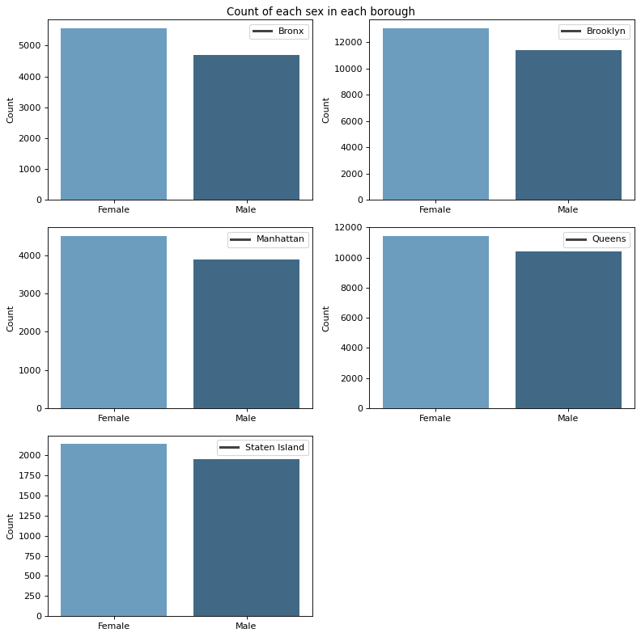
Education level in boro¶
df_city_health = pd.DataFrame(data.groupby(['Boro','EducAttain'])['SERIALNO'].count()).reset_index()
df_city_health['EducAttain'].replace([1,2,3,4],['less than High School','High School Degree','Some College','Bachelors Degree or higher'],inplace=True)
df_city_health['Boro'].replace([1,2,3,4,5],['Bronx','Brooklyn','Manhattan', 'Queens','Staten Island'],inplace=True)
df_city_health.rename(columns={'SERIALNO': 'Count'}, inplace=True)
## Plot
figure(figsize=(10, 10), dpi=80)
i = 1
for dist in sorted(set(df_city_health['Boro'])):
plt.subplot(3, 2, i)
ax = sns.barplot(x = 'EducAttain', y = 'Count', data = df_city_health[df_city_health.Boro == dist], order = sorted(set(df_city_health.EducAttain)),\
palette="Blues_d")
plt.legend(labels=[dist])
plt.xlabel('')
plt.ylabel('Count')
i += 1
ax.set_xticklabels(ax.get_xticklabels(),rotation = 30)
plt.suptitle('Count of education attened in each borough')
plt.tight_layout()
plt.subplots_adjust(top=0.96)
plt.show()
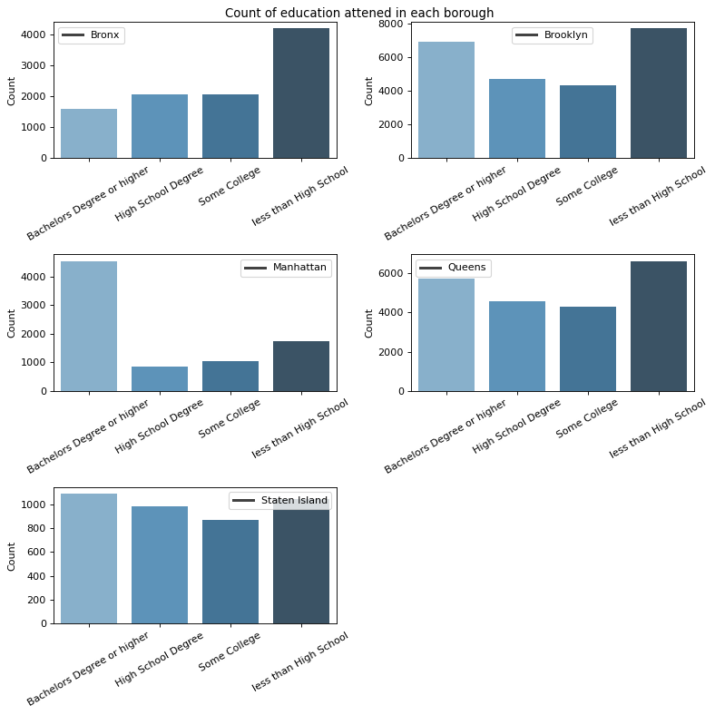
Poverty status in boro¶
df_city_health = pd.DataFrame(data.groupby(['Boro','Off_Pov_Stat'])['SERIALNO'].count()).reset_index()
df_city_health['Off_Pov_Stat'].replace([1,2],['In Poverty','Not in Poverty'],inplace=True)
df_city_health['Boro'].replace([1,2,3,4,5],['Bronx','Brooklyn','Manhattan', 'Queens','Staten Island'],inplace=True)
df_city_health.rename(columns={'SERIALNO': 'Count'}, inplace=True)
## Plot
figure(figsize=(10, 10), dpi=80)
i = 1
for dist in sorted(set(df_city_health['Boro'])):
plt.subplot(3, 2, i)
ax = sns.barplot(x = 'Off_Pov_Stat', y = 'Count', data = df_city_health[df_city_health.Boro == dist], order = sorted(set(df_city_health.Off_Pov_Stat)),\
palette="Blues_d")
plt.legend(labels=[dist])
plt.xlabel('')
plt.ylabel('Count')
i += 1
ax.set_xticklabels(ax.get_xticklabels(),rotation = 30)
plt.suptitle('Count of proverty status in each borough')
plt.tight_layout()
plt.subplots_adjust(top=0.96)
plt.show()
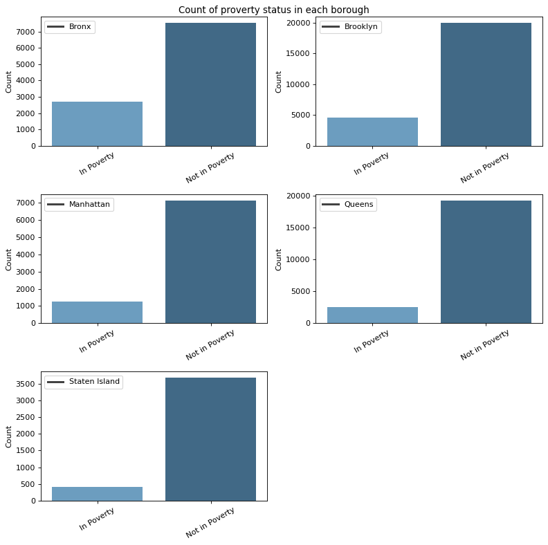
Age group in boro¶
## Create age-group
bins= np.arange(0,110,10)
labels = ['(' + str(x)+'-'+str(x+10)+']' for x in bins[:-1]]
labels[-1] = labels[-1].replace("]", ")")
data['AgeGroup'] = pd.cut(data['AGEP'], bins=bins, labels=labels, right=True)
df_city_health = pd.DataFrame(data.groupby(['Boro','AgeGroup'])['SERIALNO'].count()).reset_index()
#df_city_health['AGEP'].replace([1,2],['In Poverty','Not in Poverty'],inplace=True)
df_city_health['Boro'].replace([1,2,3,4,5],['Bronx','Brooklyn','Manhattan', 'Queens','Staten Island'],inplace=True)
df_city_health.rename(columns={'SERIALNO': 'Count'}, inplace=True)
## Plot
figure(figsize=(10, 10), dpi=80)
i = 1
for dist in sorted(set(df_city_health['Boro'])):
plt.subplot(3, 2, i)
ax = sns.barplot(x = 'AgeGroup', y = 'Count', data = df_city_health[df_city_health.Boro == dist], order = sorted(set(df_city_health.AgeGroup)),\
palette="Blues_d")
plt.legend(labels=[dist])
plt.xlabel('')
plt.ylabel('Count')
i += 1
ax.set_xticklabels(ax.get_xticklabels(),rotation = 30)
plt.suptitle('Age distirbution in each borough')
plt.tight_layout()
plt.subplots_adjust(top=0.96)
plt.show()
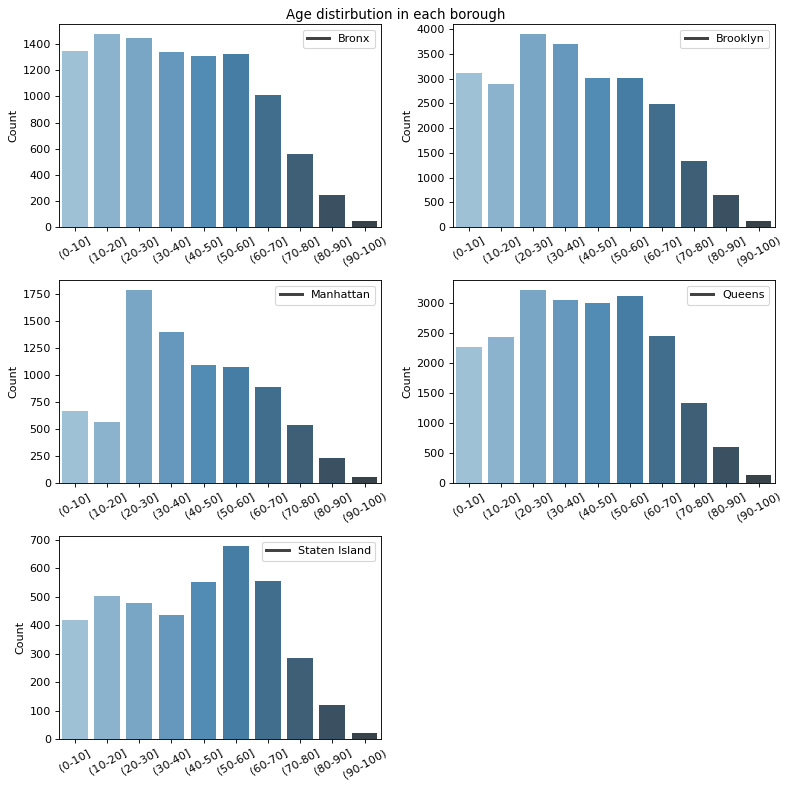
Salary in boro (Aggrigated salary) histogram¶
income_col = ['PreTaxIncome_PU', 'OI_adj']
data['Total_income'] = (data['PreTaxIncome_PU'] + data['OI_adj'])/1000
data['Boro_name'] = data['Boro'].replace([1,2,3,4,5],['Bronx','Brooklyn','Manhattan', 'Queens','Staten Island'])
boro_map = {1:'Bronx', 2:'Brooklyn',3:'Manhattan',4:'Queens',5:'Staten Island'}
## Plot
figure(figsize=(15, 10), dpi=80)
i = 1
for dist in sorted(set(data['Boro'])):
data_boro = data[data['Boro'] == dist]
plt.subplot(3, 2, i)
sns.histplot(data=data_boro, x="Total_income")
plt.axvline(data_boro['Total_income'].mean(), color = 'r')
plt.axvline(data_boro['Total_income'].median(), color = 'y')
plt.axvline(data_boro['Total_income'].max(), color = 'g')
plt.legend(labels=['Average ' + str(round(data_boro['Total_income'].mean())) + 'k','Median ' + str(round(data_boro['Total_income'].median())) + 'k',
'Max ' + str(round(data_boro['Total_income'].max())) + 'k', boro_map[dist]], bbox_to_anchor=(1.05, 1), loc=2, borderaxespad=0.)
plt.xlim(0,2000)
plt.xlabel('Annual income in thousand dollars')
plt.ylabel('Count')
i += 1
plt.suptitle('Distribution of total income in each borough in thousand pr. year')
plt.tight_layout()
plt.subplots_adjust(top=0.96)
plt.show()
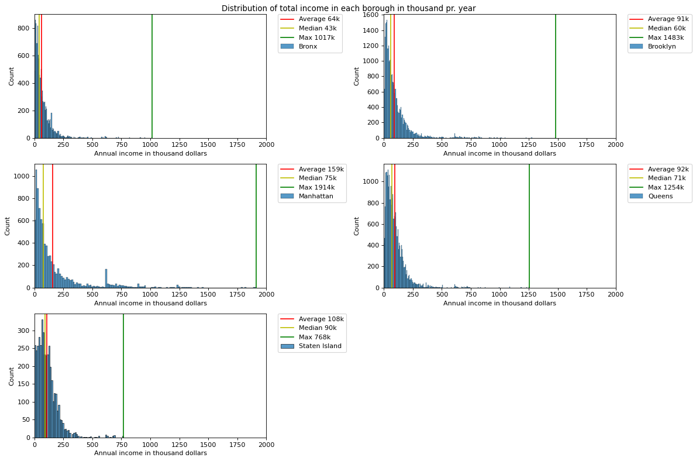
Average income pr boro¶
pd.DataFrame(data.groupby('Boro_name').mean()['Total_income'])
| Total_income | |
|---|---|
| Boro_name | |
| Bronx | 63.508739 |
| Brooklyn | 91.083187 |
| Manhattan | 158.996808 |
| Queens | 92.305275 |
| Staten Island | 107.773625 |
Ethnicity¶
df_city_health = pd.DataFrame(data.groupby(['Boro_name','Ethnicity'])['SERIALNO'].count()).reset_index()
df_city_health['Ethnicity'].replace([1,2,3,4,5],['Non-Hispanic White','Non-Hispanic Black','Non-Hispanic Asian',
'Hispanic, Any Race','Other Race/Ethnic Group'],inplace=True)
df_city_health.rename(columns={'SERIALNO': 'Count'}, inplace=True)
## Plot
figure(figsize=(10, 10), dpi=80)
i = 1
for dist in list(boro_map.values()):
plt.subplot(3, 2, i)
ax = sns.barplot(x = 'Ethnicity', y = 'Count', data = df_city_health[df_city_health.Boro_name == dist], order = sorted(set(df_city_health.Ethnicity)),\
palette="Blues_d")
plt.legend(labels=[dist])
plt.xlabel('')
plt.ylabel('Count')
i += 1
ax.set_xticklabels(ax.get_xticklabels(),rotation = 40)
plt.suptitle('Count of ethnicity in each borough')
plt.tight_layout()
plt.subplots_adjust(top=0.96)
plt.show()
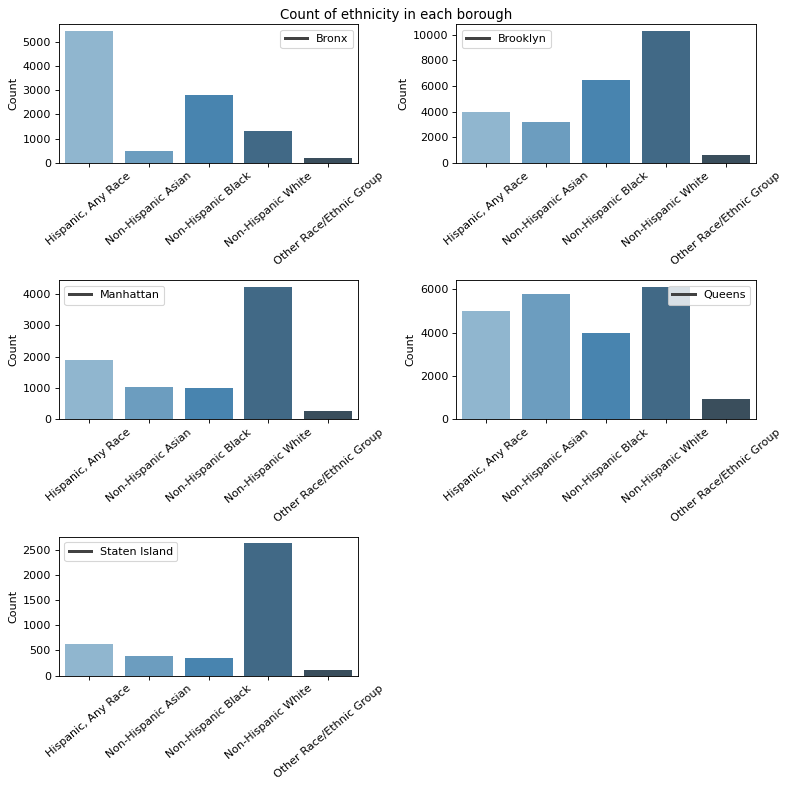
Citizenship¶
df_city_health = pd.DataFrame(data.groupby(['Boro_name','CIT'])['SERIALNO'].count()).reset_index()
df_city_health['CIT'].replace([1,2,3,4,5],['Born in the US','Born in Puerto Rico, Guam, the US Virgin Islands, or the Northern Marianas ','Born abroad of American parent(s) ',
'US citizen by naturalization','Not a citizen of the US'],inplace=True)
df_city_health.rename(columns={'SERIALNO': 'Count'}, inplace=True)
## Plot
figure(figsize=(10, 10), dpi=80)
i = 1
for dist in list(boro_map.values()):
plt.subplot(3, 2, i)
ax = sns.barplot(x = 'CIT', y = 'Count', data = df_city_health[df_city_health.Boro_name == dist], order = sorted(set(df_city_health.CIT)),\
palette="Blues_d")
plt.legend(labels=[dist])
plt.xlabel('')
plt.ylabel('Count')
i += 1
ax.set_xticklabels(ax.get_xticklabels(),rotation = 90)
plt.suptitle('Count of citizenship in each borough')
plt.tight_layout()
plt.subplots_adjust(top=0.96)
plt.show()
C:\Users\miaha\AppData\Local\Temp/ipykernel_13940/4166137522.py:19: UserWarning: Tight layout not applied. tight_layout cannot make axes height small enough to accommodate all axes decorations.
plt.tight_layout()
Education and salary¶
bins_sturges(len(data_boro))
---------------------------------------------------------------------------
NameError Traceback (most recent call last)
~\AppData\Local\Temp/ipykernel_13940/2313237816.py in <module>
----> 1 bins_sturges(len(data_boro))
NameError: name 'bins_sturges' is not defined
income_col = ['PreTaxIncome_PU', 'OI_adj']
data.loc['Total_income'] = (data['INTP_adj'] + data['SEMP_adj'] + data['WAGP_adj'] +data['RETP_adj'] )/1000
data['EducAttain_text'] = data['EducAttain'].replace([1,2,3,4],['less than High School','High School Degree','Some College','Bachelors Degree or higher'])
#data['Boro_name'] = data['Boro'].replace([1,2,3,4,5],['Bronx','Brooklyn','Manhattan', 'Queens','Staten Island'])
#boro_map = {1:'Bronx', 2:'Brooklyn',3:'Manhattan',4:'Queens',5:'Staten Island'}
Education_map = {1:'less than High School',2:'High School Degree',3:'Some College',4:'Bachelors Degree or higher'}
## Plot
figure(figsize=(15, 10), dpi=80)
i = 1
for dist in sorted(np.unique(data['EducAttain'])[:-1]):
data_boro = data[data['EducAttain'] == dist]
plt.subplot(3, 2, i)
sns.histplot(data=data_boro, x="Total_income")
plt.axvline(data_boro['Total_income'].mean(), color = 'r')
plt.axvline(data_boro['Total_income'].median(), color = 'y')
plt.axvline(data_boro['Total_income'].max(), color = 'g')
plt.legend(labels=['Average ' + str(round(data_boro['Total_income'].mean())) + 'k','Median ' + str(round(data_boro['Total_income'].median())) + 'k',
'Max ' + str(round(data_boro['Total_income'].max())) + 'k', Education_map[dist]], bbox_to_anchor=(1.05, 1), loc=2, borderaxespad=0.)
plt.xlim(0,2000)
plt.xlabel('Annual income in thousand dollars')
plt.ylabel('Count')
i += 1
plt.suptitle('Distribution of total income in each borough in thousand pr. year')
plt.tight_layout()
plt.subplots_adjust(top=0.96)
plt.show()
---------------------------------------------------------------------------
ValueError Traceback (most recent call last)
<ipython-input-50-08831939d667> in <module>
13 data_boro = data[data['EducAttain'] == dist]
14 plt.subplot(3, 2, i)
---> 15 sns.histplot(data=data_boro, x="Total_income", bins = bins_sturges(len(data_boro)))
16 plt.axvline(data_boro['Total_income'].mean(), color = 'r')
17 plt.axvline(data_boro['Total_income'].median(), color = 'y')
~\AppData\Roaming\Python\Python37\site-packages\seaborn\distributions.py in histplot(data, x, y, hue, weights, stat, bins, binwidth, binrange, discrete, cumulative, common_bins, common_norm, multiple, element, fill, shrink, kde, kde_kws, line_kws, thresh, pthresh, pmax, cbar, cbar_ax, cbar_kws, palette, hue_order, hue_norm, color, log_scale, legend, ax, **kwargs)
1430 p = _DistributionPlotter(
1431 data=data,
-> 1432 variables=_DistributionPlotter.get_semantics(locals())
1433 )
1434
~\AppData\Roaming\Python\Python37\site-packages\seaborn\distributions.py in __init__(self, data, variables)
109 ):
110
--> 111 super().__init__(data=data, variables=variables)
112
113 @property
~\AppData\Roaming\Python\Python37\site-packages\seaborn\_core.py in __init__(self, data, variables)
603 def __init__(self, data=None, variables={}):
604
--> 605 self.assign_variables(data, variables)
606
607 for var, cls in self._semantic_mappings.items():
~\AppData\Roaming\Python\Python37\site-packages\seaborn\_core.py in assign_variables(self, data, variables)
667 self.input_format = "long"
668 plot_data, variables = self._assign_variables_longform(
--> 669 data, **variables,
670 )
671
~\AppData\Roaming\Python\Python37\site-packages\seaborn\_core.py in _assign_variables_longform(self, data, **kwargs)
901
902 err = f"Could not interpret value `{val}` for parameter `{key}`"
--> 903 raise ValueError(err)
904
905 else:
ValueError: Could not interpret value `Total_income` for parameter `x`
All_income = ['INTP_adj', 'OI_adj', 'PA_adj', 'RETP_adj','SEMP_adj', 'SSIP_adj', 'SSP_adj', 'WAGP_adj']
self_income = ['INTP_adj', 'SEMP_adj', 'WAGP_adj', 'RETP_adj']
data_adult = data[data['AGEP'] > 24]
data_adult.loc['Total_income'] = (data_adult['INTP_adj'] + data_adult['SEMP_adj'] + data_adult['WAGP_adj'] +data_adult['RETP_adj'] )/1000
data_adult.loc['EducAttain_text'] = data_adult['EducAttain'].replace([1,2,3,4],['less than High School','High School Degree','Some College','Bachelors Degree or higher'])
#data['Boro_name'] = data['Boro'].replace([1,2,3,4,5],['Bronx','Brooklyn','Manhattan', 'Queens','Staten Island'])
#boro_map = {1:'Bronx', 2:'Brooklyn',3:'Manhattan',4:'Queens',5:'Staten Island'}
Education_map = {1:'less than High School',2:'High School Degree',3:'Some College',4:'Bachelors Degree or higher'}
## Plot
figure(figsize=(15, 10), dpi=80)
i = 1
for dist in sorted(np.unique(data_adult['EducAttain'])[:-1]):
data_boro = data_adult[data_adult['EducAttain'] == dist]
plt.subplot(3, 2, i)
sns.histplot(data=data_boro, x="Total_income")
plt.axvline(data_boro['Total_income'].mean(), color = 'r')
plt.axvline(data_boro['Total_income'].median(), color = 'y')
plt.axvline(data_boro['Total_income'].max(), color = 'g')
plt.legend(labels=['Average ' + str(round(data_boro['Total_income'].mean())) + 'k','Median ' + str(round(data_boro['Total_income'].median())) + 'k',
'Max ' + str(round(data_boro['Total_income'].max())) + 'k', Education_map[dist]], bbox_to_anchor=(1.05, 1), loc=2, borderaxespad=0.)
plt.xlim(0,2000)
plt.xlabel('Annual income in thousand dollars')
plt.ylabel('Count')
i += 1
plt.suptitle('Distribution of total income in each borough in thousand pr. year')
plt.tight_layout()
plt.subplots_adjust(top=0.96)
plt.show()
C:\Users\miaha\AppData\Roaming\Python\Python37\site-packages\pandas\core\indexing.py:723: SettingWithCopyWarning:
A value is trying to be set on a copy of a slice from a DataFrame
See the caveats in the documentation: https://pandas.pydata.org/pandas-docs/stable/user_guide/indexing.html#returning-a-view-versus-a-copy
iloc._setitem_with_indexer(indexer, value, self.name)
data[data['AGEP'] < 24][['SERIALNO', 'WAGP_adj']]
| SERIALNO | WAGP_adj | |
|---|---|---|
| 4 | 46 | 0.0 |
| 5 | 46 | 0.0 |
| 15 | 444 | 0.0 |
| 16 | 444 | 0.0 |
| 17 | 444 | 0.0 |
| ... | ... | ... |
| 69083 | 1512926 | 0.0 |
| 69084 | 1512926 | 0.0 |
| 69091 | 1513202 | 0.0 |
| 69092 | 1513202 | 0.0 |
| 69101 | 1513253 | 0.0 |
19153 rows × 2 columns
data[['SERIALNO', 'SSIP_adj']]
| SERIALNO | SSIP_adj | |
|---|---|---|
| 0 | 17 | 0.0 |
| 1 | 17 | 0.0 |
| 2 | 46 | 0.0 |
| 3 | 46 | 0.0 |
| 4 | 46 | 0.0 |
| ... | ... | ... |
| 69098 | 1513216 | 0.0 |
| 69099 | 1513253 | 0.0 |
| 69100 | 1513253 | 0.0 |
| 69101 | 1513253 | 0.0 |
| 69102 | 1513283 | 0.0 |
69103 rows × 2 columns
data[data['SSIP_adj']>0 ][['SERIALNO', 'SSIP_adj']]
| SERIALNO | SSIP_adj | |
|---|---|---|
| 9 | 275 | 1802.2751 |
| 19 | 554 | 5006.3198 |
| 24 | 623 | 4205.3086 |
| 59 | 887 | 10112.7670 |
| 88 | 1481 | 8510.7441 |
| ... | ... | ... |
| 68879 | 1508103 | 9812.3867 |
| 69014 | 1511637 | 3504.4241 |
| 69085 | 1513044 | 7409.3535 |
| 69093 | 1513202 | 2903.6655 |
| 69094 | 1513202 | 8010.1118 |
2418 rows × 2 columns
All_income = ['INTP_adj', 'OI_adj', 'PA_adj', 'RETP_adj','SEMP_adj', 'SSIP_adj', 'SSP_adj', 'WAGP_adj']
well_income = ['PA_adj', 'SSIP_adj','SSP_adj']
self_income = ['INTP_adj', 'SEMP_adj', 'WAGP_adj', 'RETP_adj']
Bar plot based on salary¶
import math
def bins_sturges(n):
return int(1 + np.ceil(math.log(n)))
def bins_freedamn_diaconis(data):
q3 = np.quantile(data, 0.75)
q1 = np.quantile(data, 0.25)
b_w = 2*(q3-q1)/(np.cbrt(len(data)))
if b_w == 0:
b_w = 1
bins = int(np.ceil((max(data) - min(data))/b_w))
return bins
data_adult = data[data['AGEP'] > 24]
temp_col = (data_adult['INTP_adj'] + data_adult['SEMP_adj'] + data_adult['WAGP_adj'] +data_adult['RETP_adj'])/1000
data_adult.insert(1, "Total_income", temp_col, True)
Education_map = {1:'less than High School',2:'High School Degree',3:'Some College',4:'Bachelors Degree or higher'}
## Plot
figure(figsize=(15, 10), dpi=80)
i = 1
for dist in sorted(np.unique(data_adult['EducAttain'])):
data_boro = data_adult[data_adult['EducAttain'] == dist]
plt.subplot(3, 2, i)
sns.histplot(data=data_boro, x="Total_income", bins = bins_freedamn_diaconis(data_boro['Total_income']))
plt.axvline(data_boro['Total_income'].mean(), color = 'r')
plt.axvline(data_boro['Total_income'].median(), color = 'y')
plt.axvline(data_boro['Total_income'].max(), color = 'g')
plt.legend(labels=['Average ' + str(round(data_boro['Total_income'].mean())) + 'k','Median ' + str(round(data_boro['Total_income'].median())) + 'k',
'Max ' + str(round(data_boro['Total_income'].max())) + 'k', Education_map[dist]], bbox_to_anchor=(1.05, 1), loc=2, borderaxespad=0.)
plt.xlim(-10,data_adult['Total_income'].max()*1.10)
plt.xlabel('Annual income in thousand dollars')
plt.ylabel('Count')
i += 1
plt.suptitle('Distribution of total self made income in each borough in thousand pr. year')
plt.tight_layout()
plt.subplots_adjust(top=0.96)
plt.show()
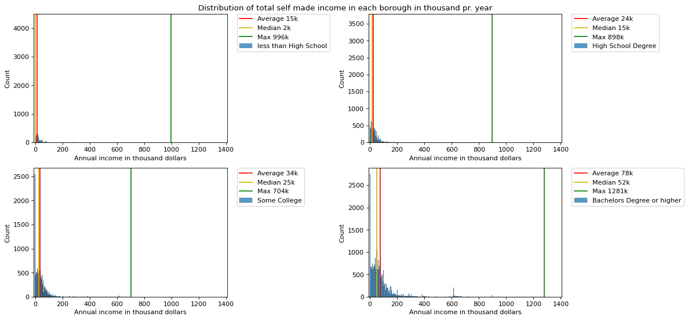
###
data_adult = data[data['AGEP'] > 24]
temp_col = (data_adult[well_income].sum(axis=1))/1000
data_adult.insert(1, "Total_wel_income", temp_col, True)
Education_map = {1:'less than High School',2:'High School Degree',3:'Some College',4:'Bachelors Degree or higher'}
## Plot
figure(figsize=(15, 10), dpi=80)
i = 1
for dist in sorted(np.unique(data_adult['EducAttain'])):
data_boro = data_adult[data_adult['EducAttain'] == dist]
plt.subplot(3, 2, i)
sns.histplot(data=data_boro, x="Total_wel_income",bins = bins_freedamn_diaconis(data_boro['Total_wel_income']))
plt.axvline(data_boro['Total_wel_income'].mean(), color = 'r')
plt.axvline(data_boro['Total_wel_income'].median(), color = 'y')
plt.axvline(data_boro['Total_wel_income'].max(), color = 'g')
plt.legend(labels=['Average ' + str(round(data_boro['Total_wel_income'].mean())) + 'k','Median ' + str(round(data_boro['Total_wel_income'].median())) + 'k',
'Max ' + str(round(data_boro['Total_wel_income'].max())) + 'k', Education_map[dist]], bbox_to_anchor=(1.05, 1), loc=2, borderaxespad=0.)
plt.xlim(data_adult['Total_wel_income'].min(),data_adult['Total_wel_income'].max()*1.10)
plt.xlabel('Annual income in tusind dollars')
plt.ylabel('Count')
i += 1
plt.suptitle('Distribution of total welfare income in each borough in tusind pr. year')
plt.tight_layout()
plt.subplots_adjust(top=0.96)
plt.show()
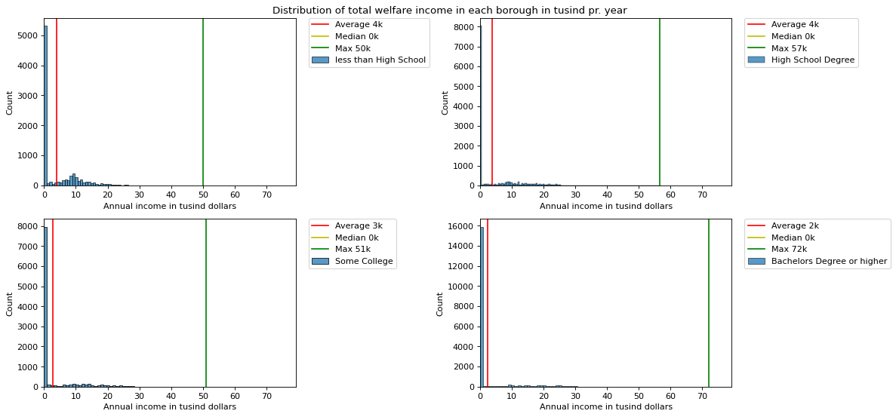
## Percentage getting money cause welfare
len(data_adult[(data_adult['EducAttain'] == 1) & (data_adult['Total_wel_income'] >0)])/len(data_adult[(data_adult['EducAttain'] == 1)]),len(data_adult[(data_adult['EducAttain'] == 2) & (data_adult['Total_wel_income'] >0)])/len(data_adult[(data_adult['EducAttain'] == 2)]),len(data_adult[(data_adult['EducAttain'] == 3) & (data_adult['Total_wel_income'] >0)])/len(data_adult[(data_adult['EducAttain'] == 3)]),len(data_adult[(data_adult['EducAttain'] == 4) & (data_adult['Total_wel_income'] >0)])/len(data_adult[(data_adult['EducAttain'] == 4)])
(0.39727751086707846,
0.3054110301768991,
0.21293611916425073,
0.14952416796601967)
data_adult = data[data['AGEP'] > 24]
temp_col = (data_adult['INTP_adj'] + data_adult['SEMP_adj'] + data_adult['WAGP_adj'] +data_adult['RETP_adj'])/1000
data_adult.insert(1, "Total_income", temp_col, True)
data_above = data_adult[data_adult['Total_income'] != 0]
Education_map = {1:'less than High School',2:'High School Degree',3:'Some College',4:'Bachelors Degree or higher'}
SEX_map = {1: 'Male', 2:'Female'}
## Plot
figure(figsize=(15, 10), dpi=80)
i = 1
for dist in sorted(np.unique(data_adult['SEX'])):
#data_boro = data_adult[data_adult['SEX'] == dist]
data_boro = data_above[data_above['SEX'] == dist]
plt.subplot(3, 2, i)
sns.histplot(data=data_boro, x="Total_income", bins = bins_freedamn_diaconis(data_boro['Total_income']))
plt.axvline(data_boro['Total_income'].mean(), color = 'r')
plt.axvline(data_boro['Total_income'].median(), color = 'y')
plt.axvline(data_boro['Total_income'].max(), color = 'g')
plt.legend(labels=['Average ' + str(round(data_boro['Total_income'].mean())) + 'k','Median ' + str(round(data_boro['Total_income'].median())) + 'k',
'Max ' + str(round(data_boro['Total_income'].max())) + 'k', SEX_map[dist]], bbox_to_anchor=(1.05, 1), loc=2, borderaxespad=0.)
plt.xlim(data_adult['Total_income'].min(),data_adult['Total_income'].max()*1.10)
plt.xlabel('Annual income in thousand dollars')
plt.ylabel('Count')
i += 1
plt.suptitle('Distribution of total self made income in each borough in thousand pr. year')
plt.tight_layout()
plt.subplots_adjust(top=0.96)
plt.show()
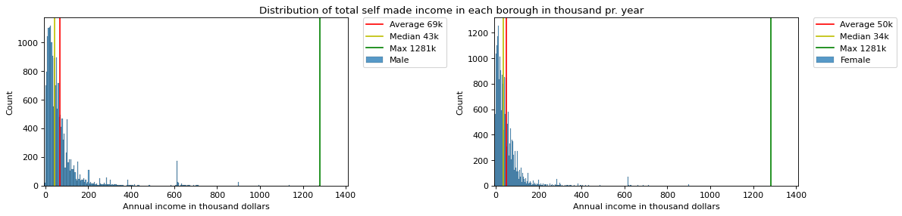
df_city_health = pd.DataFrame(data_adult.groupby(['EducAttain','SEX'])['SERIALNO'].count()).reset_index()
df_city_health['SEX'].replace([2,1],['Female','Male'],inplace=True)
df_city_health.rename(columns={'SERIALNO': 'Count'}, inplace=True)
df_city_health.loc[df_city_health['SEX'] == 'Male', 'Count'] /= sum(df_city_health.loc[df_city_health['SEX'] == 'Male', 'Count'])
df_city_health.loc[df_city_health['SEX'] == 'Female', 'Count'] /= sum(df_city_health.loc[df_city_health['SEX'] == 'Female', 'Count'])
## Plot
figure(figsize=(10, 10), dpi=80)
i = 1
for dist in sorted(set(df_city_health['EducAttain'])):
plt.subplot(3, 2, i)
ax = sns.barplot(x = 'SEX', y = 'Count', data = df_city_health[df_city_health.EducAttain == dist], order = sorted(set(df_city_health.SEX)),\
palette="Blues_d")
plt.legend(labels=[Education_map[dist]])
plt.xlabel('')
plt.ylabel('Percentage in sex')
plt.ylim(0, df_city_health['Count'].max()*1.2)
i += 1
plt.suptitle('Count of each sex in each education group')
plt.tight_layout()
plt.subplots_adjust(top=0.96)
plt.show()
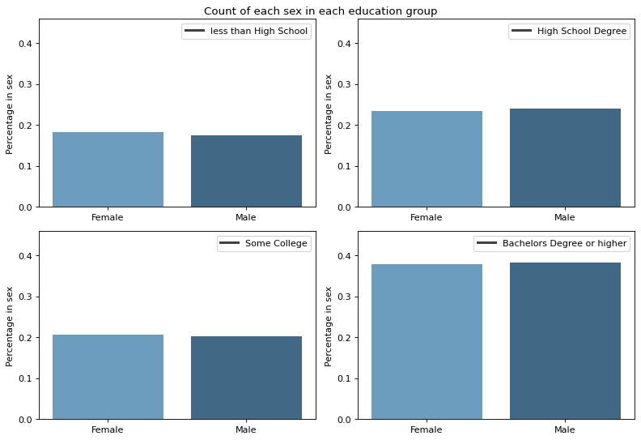
df_city_health = pd.DataFrame(data_adult.groupby(['EducAttain','Off_Pov_Stat'])['SERIALNO'].count()).reset_index()
df_city_health['Off_Pov_Stat'].replace([2,1],['Not in Poverty','In Poverty'],inplace=True)
df_city_health.rename(columns={'SERIALNO': 'Count'}, inplace=True)
for i in range(5):
df_city_health.loc[df_city_health['EducAttain'] == i, 'Count'] /= sum(df_city_health.loc[df_city_health['EducAttain'] == i, 'Count'])
## Plot
figure(figsize=(10, 10), dpi=80)
i = 1
for dist in sorted(set(df_city_health['EducAttain'])):
plt.subplot(3, 2, i)
ax = sns.barplot(x = 'Off_Pov_Stat', y = 'Count', data = df_city_health[df_city_health.EducAttain == dist], order = sorted(set(df_city_health.Off_Pov_Stat)),\
palette="Blues_d")
plt.legend(labels=[EducAttain_map[dist]])
plt.xlabel('')
plt.ylabel('Poverty and education')
plt.ylim(0, df_city_health['Count'].max()*1.2)
i += 1
plt.suptitle('Count of each sex in each education group')
plt.tight_layout()
plt.subplots_adjust(top=0.96)
plt.show()
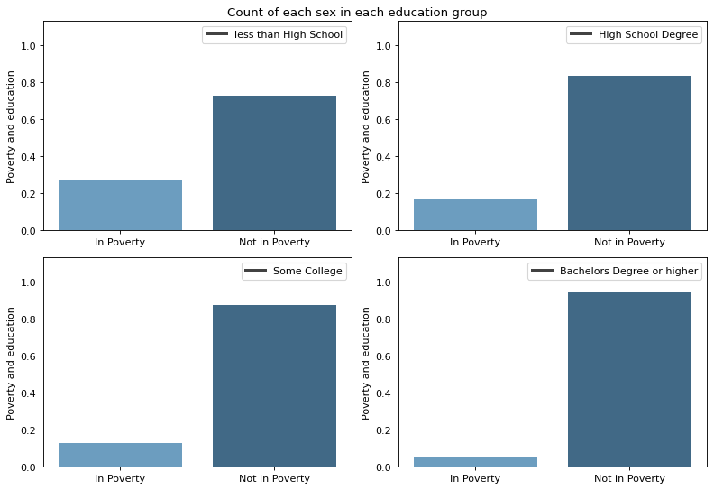
df_city_health = pd.DataFrame(data_adult.groupby(['EducAttain','AgeGroup'])['SERIALNO'].count()).reset_index()
df_city_health.rename(columns={'SERIALNO': 'Count'}, inplace=True)
## Plot
figure(figsize=(10, 10), dpi=80)
i = 1
for dist in sorted(set(df_city_health['EducAttain'])):
plt.subplot(3, 2, i)
ax = sns.barplot(x = 'AgeGroup', y = 'Count', data = df_city_health[df_city_health.EducAttain == dist], order = sorted(set(df_city_health.AgeGroup)),\
palette="Blues_d")
plt.legend(labels=[EducAttain_map[dist]])
plt.xlabel('')
plt.ylabel('Count')
plt.ylim(df_city_health['Count'].min(), df_city_health['Count'].max()*1.2)
i += 1
plt.suptitle('Count of each age group in each education group')
plt.tight_layout()
plt.subplots_adjust(top=0.96)
plt.show()
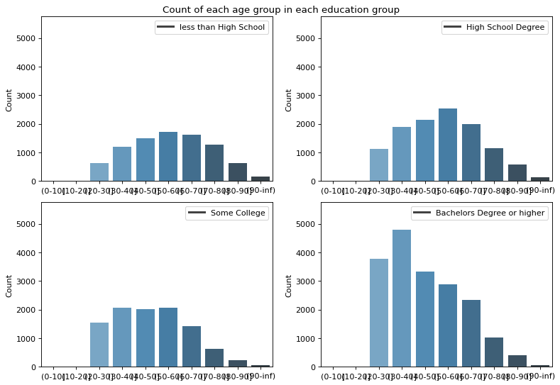
Ethnicity_map = {1:'Non-Hispanic White',2:'Non-Hispanic Black',3:'Non-Hispanic Asian',
4:'Hispanic, Any Race',5:'Other Race/Ethnic Group'}
figure(figsize=(10, 10), dpi=80)
i = 1
for eth in list(Ethnicity_map.keys()):
plt.subplot(3, 2, i)
data_temp = data_adult[data_adult['Ethnicity'] == eth]
age_edu = {}
for age in list(set(data_temp['AGEP'])):
age_edu[age] = data_temp.loc[data_temp['AGEP']==age,'EducAttain'].mode()
ax = sns.scatterplot(x = 'Age', y = 'Education', data = pd.DataFrame(age_edu).transpose().reset_index().rename({'index': 'Age', 0:'Education'}, axis='columns'),\
palette="Blues_d")
plt.legend(labels=[Ethnicity_map[eth]])
plt.xlabel('Age')
plt.ylabel('Education')
plt.ylim(0,5)
i += 1
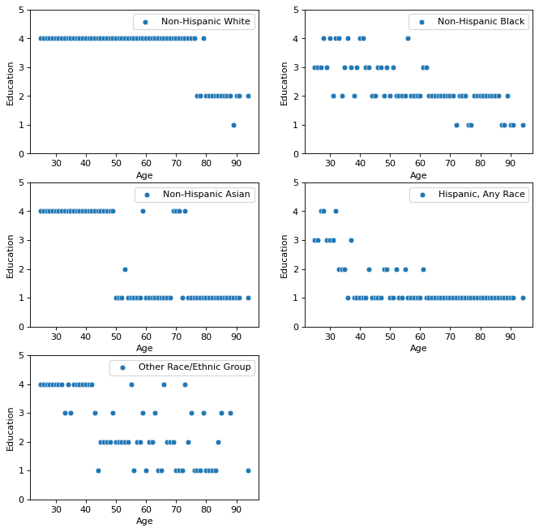
Education based on race and sex¶
SEX_map.values()
dict_values(['Male', 'Female'])
df_city_health = pd.DataFrame(data_adult.groupby(['EducAttain','Ethnicity','SEX'])['SERIALNO'].count()).reset_index()
df_city_health['SEX'].replace([2,1],['Female','Male'],inplace=True)
df_city_health.rename(columns={'SERIALNO': 'Count'}, inplace=True)
for eth in list(Ethnicity_map.keys()):
for sex in list(SEX_map.values()):
df_city_health.loc[(df_city_health['Ethnicity'] == eth) & (df_city_health['SEX'] == sex) , 'Count'] = df_city_health.loc[(df_city_health['Ethnicity'] == eth) & (df_city_health['SEX'] == sex) , 'Count']/(sum(df_city_health.loc[(df_city_health['Ethnicity'] == eth) &(df_city_health['SEX'] == sex), 'Count']))
## Plot
figure(figsize=(10, 10), dpi=80)
i = 1
for dist in sorted(set(df_city_health['Ethnicity'])):
plt.subplot(3, 2, i)
ax = sns.barplot(x = 'EducAttain', y = 'Count',hue='SEX', data = df_city_health[df_city_health.Ethnicity == dist], order = sorted(set(df_city_health.EducAttain)),\
palette="Blues_d")
#plt.legend(labels=[Education_map[dist],'Male', 'Female'])
plt.xlabel('')
plt.ylabel('Percentage in ethnicity')
plt.ylim(0, 0.7)
plt.title(Ethnicity_map[dist])
i += 1
plt.suptitle('Count of each sex and ethnicity in each education group')
plt.tight_layout()
plt.subplots_adjust(top=0.96)
plt.show()
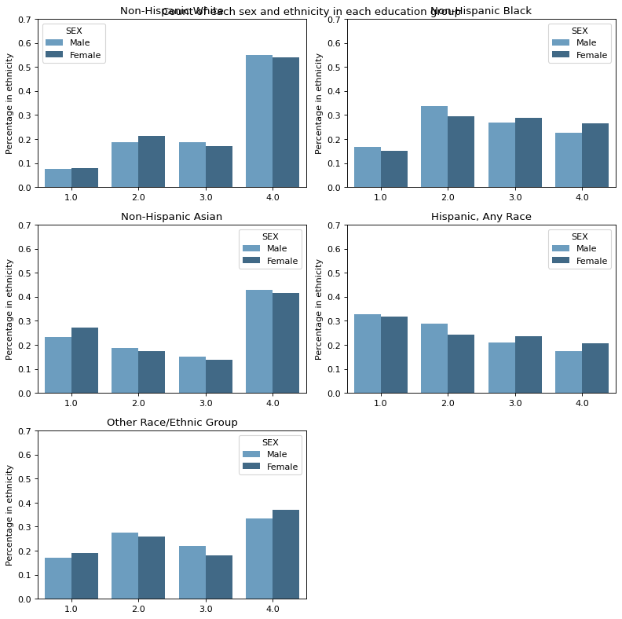
df_city_health = pd.DataFrame(data.groupby(['Boro','EducAttain'])['SERIALNO'].count()).reset_index()
df_city_health['EducAttain'].replace([1,2,3,4],['less than High School','High School Degree','Some College','Bachelors Degree or higher'],inplace=True)
df_city_health['Boro'].replace([1,2,3,4,5],['Bronx','Brooklyn','Manhattan', 'Queens','Staten Island'],inplace=True)
df_city_health.rename(columns={'SERIALNO': 'Count'}, inplace=True)
## Plot
figure(figsize=(10, 10), dpi=80)
i = 1
for dist in sorted(set(df_city_health['Boro'])):
plt.subplot(3, 2, i)
ax = sns.barplot(x = 'EducAttain', y = 'Count', data = df_city_health[df_city_health.Boro == dist], order = sorted(set(df_city_health.EducAttain)),\
palette="Blues_d")
plt.legend(labels=[dist])
plt.xlabel('')
plt.ylabel('Count')
i += 1
ax.set_xticklabels(ax.get_xticklabels(),rotation = 30)
plt.suptitle('Count of education attened in each borough')
plt.tight_layout()
plt.subplots_adjust(top=0.96)
plt.show()
Poverty for sex and race¶
df_city_health = pd.DataFrame(data_adult.groupby(['Off_Pov_Stat','Ethnicity','SEX'])['SERIALNO'].count()).reset_index()
df_city_health['SEX'].replace([2,1],['Female','Male'],inplace=True)
df_city_health.rename(columns={'SERIALNO': 'Count'}, inplace=True)
for eth in list(Ethnicity_map.keys()):
for sex in list(SEX_map.values()):
df_city_health.loc[(df_city_health['Ethnicity'] == eth) & (df_city_health['SEX'] == sex) , 'Count'] = df_city_health.loc[(df_city_health['Ethnicity'] == eth) & (df_city_health['SEX'] == sex) , 'Count']/(sum(df_city_health.loc[(df_city_health['Ethnicity'] == eth) &(df_city_health['SEX'] == sex), 'Count']))
## Plot
figure(figsize=(10, 10), dpi=80)
i = 1
for dist in sorted(set(df_city_health['Ethnicity'])):
plt.subplot(3, 2, i)
ax = sns.barplot(x = 'Off_Pov_Stat', y = 'Count',hue='SEX', data = df_city_health[df_city_health.Ethnicity == dist], order = sorted(set(df_city_health.Off_Pov_Stat)),\
palette="Blues_d")
#plt.legend(labels=[Education_map[dist],'Male', 'Female'])
plt.xlabel('')
plt.ylabel('Percentage in ethnicity')
plt.ylim(0, 1)
plt.title(Ethnicity_map[dist])
i += 1
plt.suptitle('Count of each sex and ethnicity in each education group')
plt.tight_layout()
plt.subplots_adjust(top=0.96)
plt.show()
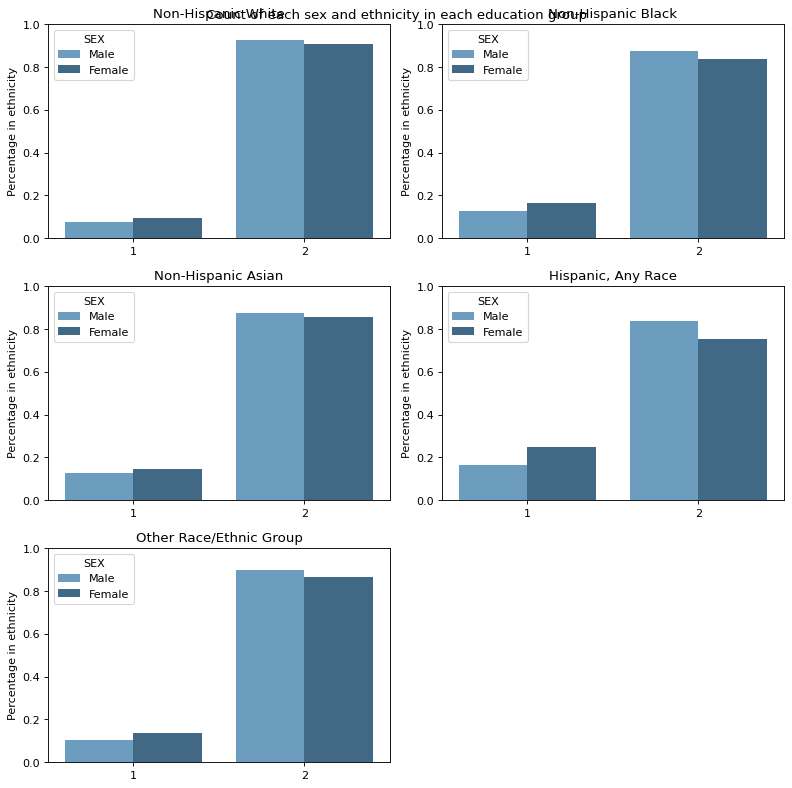
df_city_health = pd.DataFrame(data_adult.groupby(['Off_Pov_Stat','Ethnicity','NP'])['SERIALNO'].count()).reset_index()
#df_city_health['SEX'].replace([2,1],['Female','Male'],inplace=True)
df_city_health.rename(columns={'SERIALNO': 'Count'}, inplace=True)
for eth in list(Ethnicity_map.keys()):
for sex in list(set(df_city_health['NP'])):
df_city_health.loc[(df_city_health['Ethnicity'] == eth) & (df_city_health['NP'] == sex) , 'Count'] = df_city_health.loc[(df_city_health['Ethnicity'] == eth) & (df_city_health['NP'] == sex) , 'Count']/(sum(df_city_health.loc[(df_city_health['Ethnicity'] == eth) &(df_city_health['NP'] == sex), 'Count']))
## Plot
figure(figsize=(10, 10), dpi=80)
i = 1
for dist in sorted(set(df_city_health['Ethnicity'])):
plt.subplot(3, 2, i)
ax = sns.barplot(x = 'Off_Pov_Stat', y = 'Count',hue='NP', data = df_city_health[df_city_health.Ethnicity == dist], order = sorted(set(df_city_health.Off_Pov_Stat)),\
palette="Blues_d")
#plt.legend(labels=[Education_map[dist],'Male', 'Female'])
plt.xlabel('')
plt.ylabel('Percentage in ethnicity')
plt.ylim(0, 1.1)
plt.title(Ethnicity_map[dist])
i += 1
plt.suptitle('Count of each sex and ethnicity in each education group')
plt.tight_layout()
plt.subplots_adjust(top=0.96)
plt.show()
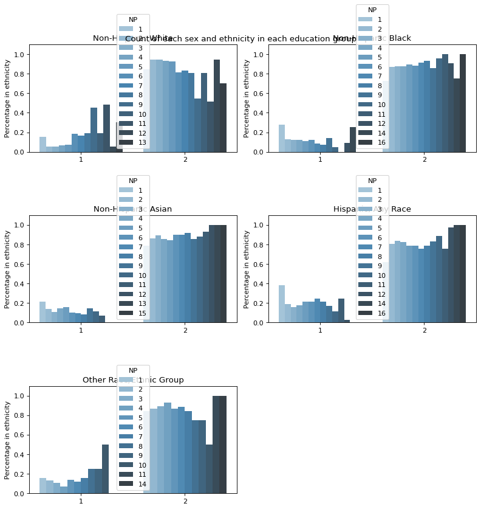
#### Age and poverty
df_city_health = pd.DataFrame(data.groupby(['AGEP','Off_Pov_Stat'])['SERIALNO'].count()).reset_index()
for i in list(set(df_city_health['AGEP'])):
for k in [1,2]:
df_city_health.loc[(df_city_health['AGEP'] == i) & (df_city_health['Off_Pov_Stat'] == i), 'SERIALNO'] /= sum(df_city_health.loc[(df_city_health['AGEP'] == i) & (df_city_health['Off_Pov_Stat'] == i), 'SERIALNO'])
df_city_health.loc[(df_city_health['Ethnicity'] == eth) & (df_city_health['SEX'] == sex) , 'Count'] = df_city_health.loc[(df_city_health['Ethnicity'] == eth) & (df_city_health['SEX'] == sex) , 'Count']/(sum(df_city_health.loc[(df_city_health['Ethnicity'] == eth) & (df_city_health['SEX'] == sex), 'Count']))
#df_city_health['EducAttain'].replace([1,2,3,4],['less than High School','High School Degree','Some College','Bachelors Degree or higher'],inplace=True)
#df_city_health['Boro'].replace([1,2,3,4,5],['Bronx','Brooklyn','Manhattan', 'Queens','Staten Island'],inplace=True)
#df_city_health.rename(columns={'SERIALNO': 'Count'}, inplace=True)
df_city_health
| AGEP | Off_Pov_Stat | SERIALNO | |
|---|---|---|---|
| 0 | 0 | 1 | 155 |
| 1 | 0 | 2 | 562 |
| 2 | 1 | 1 | 165 |
| 3 | 1 | 2 | 580 |
| 4 | 2 | 1 | 174 |
| ... | ... | ... | ... |
| 181 | 90 | 2 | 80 |
| 182 | 91 | 1 | 12 |
| 183 | 91 | 2 | 61 |
| 184 | 94 | 1 | 54 |
| 185 | 94 | 2 | 268 |
186 rows × 3 columns
## Plot
figure(figsize=(10, 10), dpi=80)
i = 1
for dist in sorted(set(df_city_health['Boro'])):
plt.subplot(3, 2, i)
ax = sns.barplot(x = 'EducAttain', y = 'Count', data = df_city_health[df_city_health.Boro == dist], order = sorted(set(df_city_health.EducAttain)),\
palette="Blues_d")
plt.legend(labels=[dist])
plt.xlabel('')
plt.ylabel('Count')
i += 1
ax.set_xticklabels(ax.get_xticklabels(),rotation = 30)
plt.suptitle('Count of education attened in each borough')
plt.tight_layout()
plt.subplots_adjust(top=0.96)
plt.show()
data_above.columns
Index(['SERIALNO', 'Total_income', 'SPORDER', 'PWGTP', 'WGTP', 'AGEP', 'CIT',
'REL', 'SCH', 'SCHG', 'SCHL', 'SEX', 'ESR', 'LANX', 'ENG', 'MSP', 'MAR',
'WKW', 'WKHP', 'DIS', 'JWTR', 'NP', 'TEN', 'HHT', 'AgeCateg', 'Boro',
'CitizenStatus', 'EducAttain', 'EST_Childcare', 'EST_Commuting',
'EST_EITC', 'EST_FICAtax', 'EST_HEAP', 'EST_Housing', 'EST_IncomeTax',
'EST_MOOP', 'EST_Nutrition', 'EST_PovGap', 'EST_PovGapIndex',
'Ethnicity', 'FamType_PU', 'FTPTWork', 'INTP_adj', 'MRGP_adj',
'NYCgov_Income', 'NYCgov_Pov_Stat', 'NYCgov_REL', 'NYCgov_Threshold',
'Off_Pov_Stat', 'Off_Threshold', 'OI_adj', 'PA_adj', 'Povunit_ID',
'Povunit_Rel', 'PreTaxIncome_PU', 'RETP_adj', 'RNTP_adj', 'SEMP_adj',
'SSIP_adj', 'SSP_adj', 'TotalWorkHrs_PU', 'WAGP_adj', 'AgeGroup'],
dtype='object')
Bokeh¶
## For the plot we will reload the data since they where modificed during the predious parts
X_r = pd.read_csv("https://raw.githubusercontent.com/suneman/socialdata2022/main/files/recidivism_dataset_sub.csv")
features = ['age', 'sex', 'race','juv_fel_count','juv_misd_count','juv_other_count','priors_count','is_recid','days_b_screening_arrest','c_charge_degree']
target = ['two_year_recid']
X_r = X_r[features + target]
## Preprocess data
## is_recid not known
X_r = X_r[X_r['is_recid'] != -1]
## only records cause jail time
set(X_r['c_charge_degree']) # There is none but will add it if it occurs in the futur
X_r = X_r[X_r['c_charge_degree'] != 'O']
## Records having -30 to 30 between arrest and screening
X_r = X_r[(X_r['days_b_screening_arrest'] >=-30) & (X_r['days_b_screening_arrest'] <=30)]
## Create age-group
bins= np.arange(0,120,20)
labels = ['(' + str(x)+'-'+str(x+20)+']' for x in bins[:-1]]
X_r['AgeGroup'] = pd.cut(X_r['age'], bins=bins, labels=labels, right=True)
X_r.head()
def plot_expl(col):
## Create dataframe for each col-group
data_ar = pd.DataFrame()
for a in sorted(list(set(X_r[col]))):
temp_count = len(X_r[X_r[col] == a])
temp_recom = len(X_r[((X_r[col] == a) & (X_r["is_recid"] == 1))])
df_temp = pd.DataFrame({'Count': temp_count, 'Recommitted':temp_recom},index=[a])
data_ar = pd.concat([data_ar,df_temp], axis=0)
data_ar.fillna(0, inplace=True)
## Plot
data_ar['frac_at'] = data_ar['Recommitted'] / data_ar['Count']
data_ar['frac_all'] = data_ar['Recommitted'] / data_ar['Recommitted'].sum()
plot_col =['Count','Recommitted']
CDS_data = ColumnDataSource(data=data_ar)
#Choose a title
title = 'Number of Samples by' + col+ ' and recommited crimes'
#Establish which categories will appear when hovering over each node
HOVER_TOOLTIPS = [
("Fraction of recommitted crimes in the "+ col, "@frac_at"),
('Fraction of recommitted crimes over all ' + col, '@frac_all')
]
#Create a plot — set dimensions, toolbar, and title
p = figure(tooltips = HOVER_TOOLTIPS,
tools="pan,wheel_zoom,save,reset", active_scroll='wheel_zoom',
title=title,
x_axis_label = col,
y_axis_label = "Number of samples",
x_range = list(data_ar.index))
bar ={} # to store vbars
# here we will do a for loop to create a bar for each age-group
color_bar = ['red', 'blue']
for indx,i in enumerate(data_ar.columns[0:2]):
if indx == 0:
bar[indx] = p.vbar(x="index", top=i, source= CDS_data, color=color_bar[indx], width=0.5)
#
#p.add_tools(HOVER_TOOLTIPS)
else:
bar[indx] = p.vbar(x="index", top=i, source= CDS_data, color=color_bar[indx], width=0.5)
items = [] # for the custom legend // you need to figure out where to add it
for indx,i in enumerate(data_ar.columns[0:2]):
items.append((i, [bar[indx]])) # figure out where to add it
legend = Legend(items=items, location="top_right") # figure out where to add it
p.add_layout(legend, "right") # figure where to add it # if you read the guide, it will make sense :)
p.legend.click_policy="mute" #assigns the click policy (you can try to use ''hide')
return p
## Plot for the 3 different types
p = plot_expl("AgeGroup")
p2 = plot_expl("sex")
p3 = plot_expl("race")
## Combine
l1 = layout([[p]])
l2 = layout([[p2]])
l3 = layout([[p3]])
tab1 = Panel(child=l1,title="Age group")
tab2 = Panel(child=l2,title="Sex")
tab3 = Panel(child=l3,title="Race")
tabs = Tabs(tabs=[ tab1, tab2, tab3 ])
curdoc().add_root(tabs)
show(tabs)